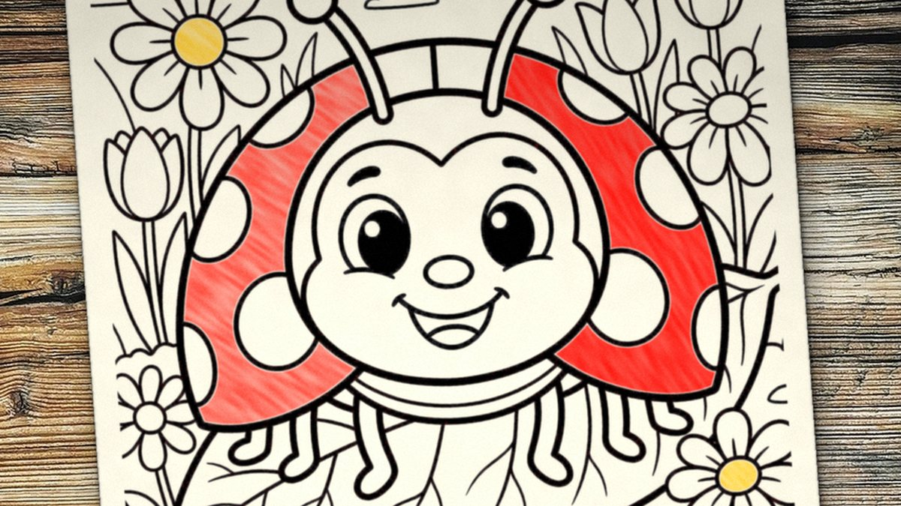
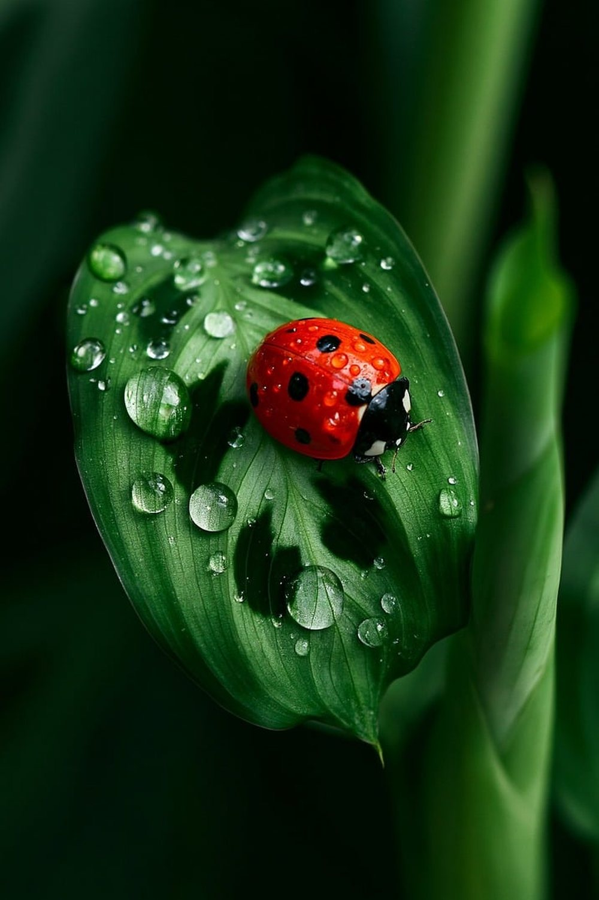
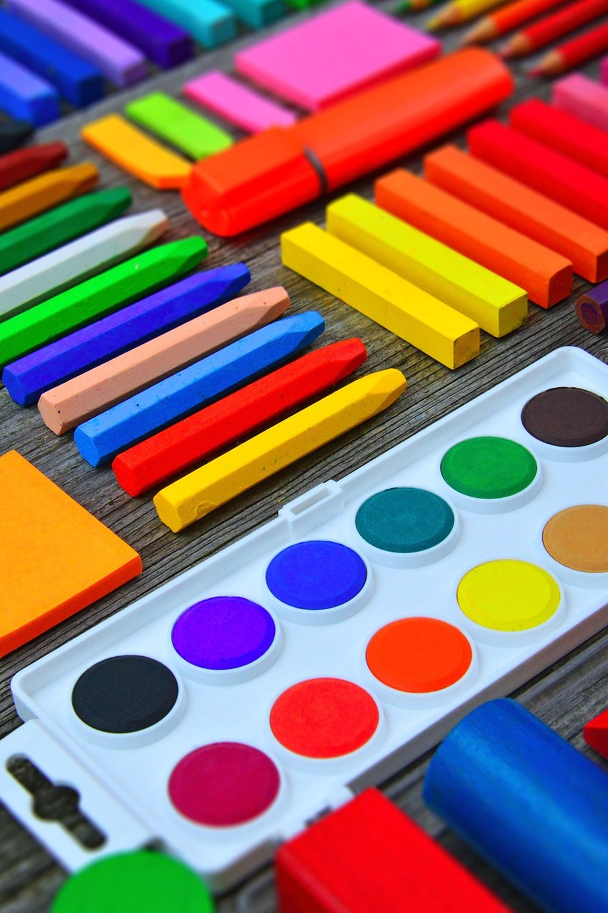

October 25, 2026 · By Pixel Punk Studio
You print a coloring page, hand over the crayons, and two minutes later your child is asking for the tablet. Sound familiar? Most kids don't dislike coloring: they lose interest when the page is too busy, when there is nothing to do but fill in shapes, or when it feels like homework. Bugs are a great fix. Kids are naturally curious about them, they are easy to draw, and every bug comes with a surprising fact. Here are eight ways to turn a simple bug coloring page into something they actually want to finish.
Why kids give up on coloring pages
- Too much detail. Tiny shapes and thin lines are hard for small hands, and the page never looks "done". Young children need bold lines and big spaces.
- No reason to color. A page with no story, game or question is just a task.
- Too long. A page that takes forty minutes ends half-finished. Short wins keep kids coming back.
8 bug coloring activities
- Real or rainbow? Look at a photo of a real ladybug, bee or butterfly first and try to match its colors. Then color a second copy in completely silly colors and ask which one they like best.
- Count the spots. Before coloring a ladybug, count its spots together. Roll a die and draw that many extra spots: easy math practice that doesn't feel like math.
- The fun fact game. Read the "Did you know?" fact aloud ("a ladybug can eat 50 aphids a day!") and ask your child to guess the answer before you read it. They will remember it far longer than the coloring.
- Tell the bug's story. Once the page is colored, ask: what is this bug's name? Where is it going? Younger kids can tell the story while you write it down; older ones can write it on the back or on a story page.
- Bug hunt, then color. Go outside (or look out of the window) and spot real bugs: ants, beetles, spiders, a bee on a flower. Then color the bugs you found. In winter, a picture book or a bug video works too.
- Bug of the day. On school breaks, put one bug page on the table each morning. One page a day is a manageable goal, and by the end of the week they have their own bug collection.
- Build a bug garden. Cut out the finished bugs and tape them on a big sheet of paper or the fridge, then draw leaves, flowers and a sun around them. Each new page grows the garden.
- Color together. Print two copies and color side by side with your child, a sibling or a grandparent. Compare at the end: it is the simplest way to make coloring social.

Tips for little hands
- Choose bold, simple designs with thick outlines and large spaces, especially for ages 3 to 6.
- Use chunky crayons or triangular pencils. They are easier to grip and don't break as often.
- Print on thicker paper if you have it, so markers don't bleed through and the page survives the fridge door.
- Keep sessions short. Ten minutes of happy coloring beats forty minutes of nagging. It is fine to finish tomorrow.
- Display the result. A colored bug on the wall tells your child their work matters, and makes them want to color the next one.

Free bug coloring page to print
Start with our free ladybug coloring page below: a smiling ladybug on a big leaf, with bold, easy lines, a "Did you know?" fun fact and a story page. If your child wants more, our Cute Bug Days Coloring Book has 50 cute bugs and insects to color, each with its own fun fact, and Bug Hunt Word Search is a great next step for kids who are starting to read.